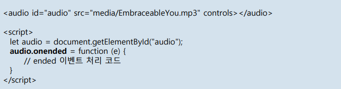
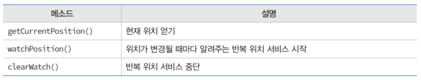
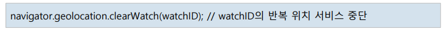

자바스크립트로 오디오 제어
audio 태그
<audio id="audio" src="media/EmbraceableYou.mp3" loop controls>...</audio>
오디오 DOM 객체 알아내기
let audio = document.getElementById("audio");
오디오 재생 및 일시 중지
audio.play(); //재생
audio.pause(); //일시 중지
오디오 처음부터 재생
audio.load(); //src에 지정된 오디오 데이터 로드
audio.play(); //처음부터 재생
오디오 음량 제어와 음소거
audio.volume += 0.1; //볼륨 0.1 증가
audio.muted = true; //음소거, 볼륨 변경 없음
이곳에 오디오 제어 메시지 출력
자바스크립트로 비디오 제어
video 태그
<video id="video" width="320" height="240" src="media/bear.mp4" controls></video>
비디오 DOM 객체 알아내기
let video = document.getElementById("video");
loadedmetadata 이벤트
비디오 파일의 로드 완료시, video 객체에 loadedmetadata 이벤트 발생
원본 해상도 : video.videoWidth, video.videoHeight
예시)
오디오와 비디오의 onended 리스너
오디오/비디오의 재생이 완료되었을 때 호출되는 이벤트 리스너
예시)

loop 속성이 설정되면 onended 이벤트 리스너 호출되지 않음
오디오 연주가 끝나면 배경색이 바뀝니다 (aliceblue)
위치 정보 서비스
컴퓨터/모바일 장치(사용자)의 위치(위도와 경도)를 브라우저(자바스크립트 코드)에게 공급하는 서비스
geolocation 객체
위치 정보 서비스 2가지
현재 위치 서비스 : 요청 시 현재 위치를 알려주는 서비스
반복 위치 서비스 : 위치가 변경될 때마다 반복하여 알려주는 서비스

브라우저의 위치 정보 서비스 지원 여부
현재 위치 얻기
getCurrentPosition() 메소드 호출
getCurrentPosition()은 호출 즉시 현재 위치를 리턴하는 것이 아님
위치가 파악되면 호출될 콜백 함수 positionCallback(Position) 등록
예시)
웹 페이지에 지도 넣기
위치 정보 서비스와 지도 서비스는 별개
위치 정보 서비스는 웹 브라우저의 구현에 달려 있음
지도는 지도 서비스 기업(구글, 네이버, 카카오, 티맵 등)의 고유 자산
예시)
OpenStreetMap 지도 - 개방형 무료 지도
반복 위치 서비스
위치 변경 시마다 현재 위치 얻기
watchPosition() 호출
위치가 변경될 때마다 호출되는 콜백 함수 등록
watchPosition()의 리턴 값 : 반복 위치 서비스 id
clearWatch() 호출
watchPosition()가 리턴한 id로 반복 위치 서비스 중단
예시)


웹 워커
백그라운드 태스크를 만드는 기능
자바스크립트 코드를 백그라운드에서 별도로 실행시킬 수 있는 HTML5 표준 기능
백그라운드 태스크를 워커 태스크라고 부름
실행 시간이 긴 계산 작업에 적합
백그라운드 태스크로 실행할 자바스크립트 코드는 파일 형태로 저장
동일 도메인(same origin) 원칙 준수
로컬 컴퓨터의 웹 페이지에서는 작동하지 않음
워커 객체와 워커 태스크
워커 태스크: 웹 워커 기능을 이용하여 만든 백그라운드 태스크
워커 태스크 만들기
워커 객체의 메소드와 이벤트 리스너
워커 객체의 onmessage 리스너
워커 태스크가 보내는 message 이벤트를 받는 코드
addWorker.onmessage = function (e) { // e에 MessageEvent 객체가 전달
alert(e.data); // e.data는 "55"
}
메인 태스크와 워커 태스크의 데이터 전송
워커 태스크에 시작 숫자와 끝 숫자를 보내고 합을 전달받는 코드

~
=
워커 태스크 종료
워크 태스크 스스로 종료
close()
워커 객체가 워커 태스크를 강제 종료
terminate() 메소드
예시)
addWorker.terminate();
워커 태스크가 종료하면 워커 객체는 더 이상 워커 태스크와 message 이벤트를 주고받을 수 없다.